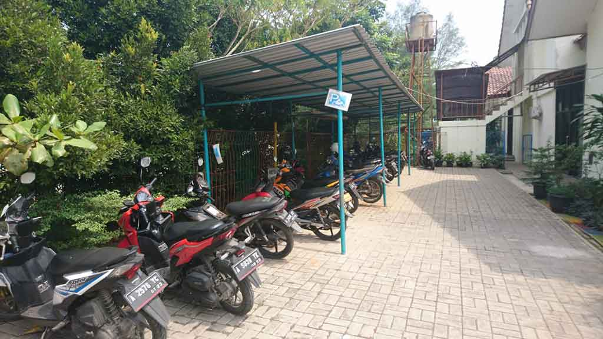
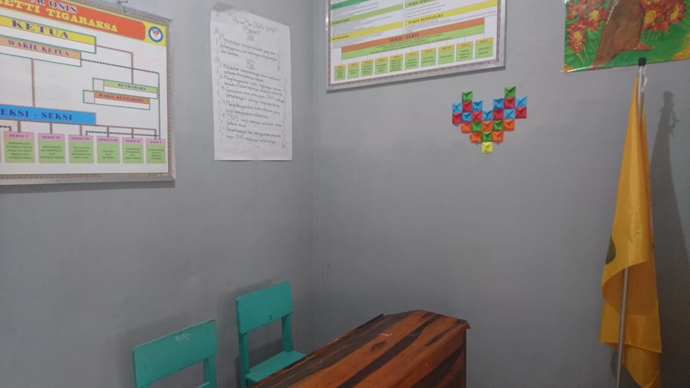

Semangat, Fraternitas, Dina
SMPS Fioretti
Generasi Berkarakter SFD
Visi
Menjadi Sekolah Katolik Yang Unggul Dalam Iman, Ilmu Pengetahuan Teknologi dan Budaya
Misi
- Mendidik Berdasarkan Nilai Semangat, Fraternitas, dan Dina
- Mengembangkan Pendidikan Yang Inovatif, Relevan Dengan Ilmu Pengetahuan, Teknologi Dan Budaya
- Meningkatkan Kualitas Pelayanan Pendidik Dan Tenaga Kependidikan
Sarana dan Prasarana


Halaman Sekolah
Untuk menunjang proses pembelajaran di luar ruangan dan sebagai tempat kegiatan penunjang akademik termasuk kegiatan upacara bendera.
Kantin
Tempat dimana para siswa/i makan atau berkumpul sewaktu di jam istirahat atau saat menunggu jemputan. Kantin ini sudah tertata rapih agar siswa/i merasa nyaman.
Laboratorium IPA
Ruangan yang digunakan untuk proses pembelajaran Ilmu Pengetahuan Alam (IPA) berbasis praktek. Lab IPA SMPS Fioretti memiliki alat - alat laboratorium yang sudah sesuai dengan standar pembelajaran.
Lapangan Serba Guna
Digunakan untuk proses kegiatan luar ruangan yang terdiri dari lapangan basket, futsal, voli dan kegiatan olahraga lainnya.
Koridor Sekolah
Koridor yang luas dan bersih sebagai sarana pembelajaran luar ruangan dan tempat siswa berkumpul atau bersosialisasi bersama warga sekolah.
Laboratorium Komputer
Untuk menunjang proses pembelajaran berbasis TIK (Teknologi Informasi dan Komunikasi). Terdiri lebih dari 20 Unit Komputer yang siap digunakan untuk seluruh warga sekolah.
Ruang Perpustakaan
Untuk menunjang pembelajaran berbasis literasi dan mendorong minat para siswa/i untuk membaca secara nyaman dengan koleksi buku yang cukup lengkap.
Ruang Bimbingan Konseling
Ruang untuk melakukan komunikasi secara langsung dengan Guru Bimbingan Konseling sebagai layanan konseling berkaitan dengan pengembangan pribadi siswa, sosial, belajar, dan sebagainya.
Ruang Doa
Walaupun SMPS Fioretti menggunakan konsep sekolah berlandaskan katolik, tetapi untuk menunjang dan mengajarkan konsep toleransi beragama disediakan ruang doa untuk seluruh siswa agar bisa beribadah sesuai kepercayaan masing - masing.
Ruang Kelas
Ruang kelas nyaman untuk melakukan proses belajar mengajar bagi guru dan siswa/i. Setiap ruang kelas di desain agar nyaman bagi seluruh warga sekolah untuk berinteraksi dalam proses pembelajaran.
Area Parkir
Area parkir terdiri dari parkir motor, mobil, dan juga sepeda yang cukup luas. Jadi, terkhusus bagi siswa yang menggunakan sepeda untuk pergi ke sekolah, tidak perlu khawatir yah.
Toilet
Toilet yang bersih sebagai penunjang sarana bagi siswa/i ataupun seluruh warga sekolah. SMPS Fioretti menyediakan toilet terpisah yaitu untuk laki - laki dan untuk perempuan.
Ruang OSIS
SMPS Fioretti memiliki organisasi OSIS yang cukup aktif dan berpartisipasi dalam beberapa kegiatan yang diselenggarakan di sekolah ataupun di luar sekolah. Maka daripada itu disediakan ruang OSIS yang nyaman.
Kegiatan Luar Sekolah
Esktrakurikuler
Galeri
Kegiatan Sekolah